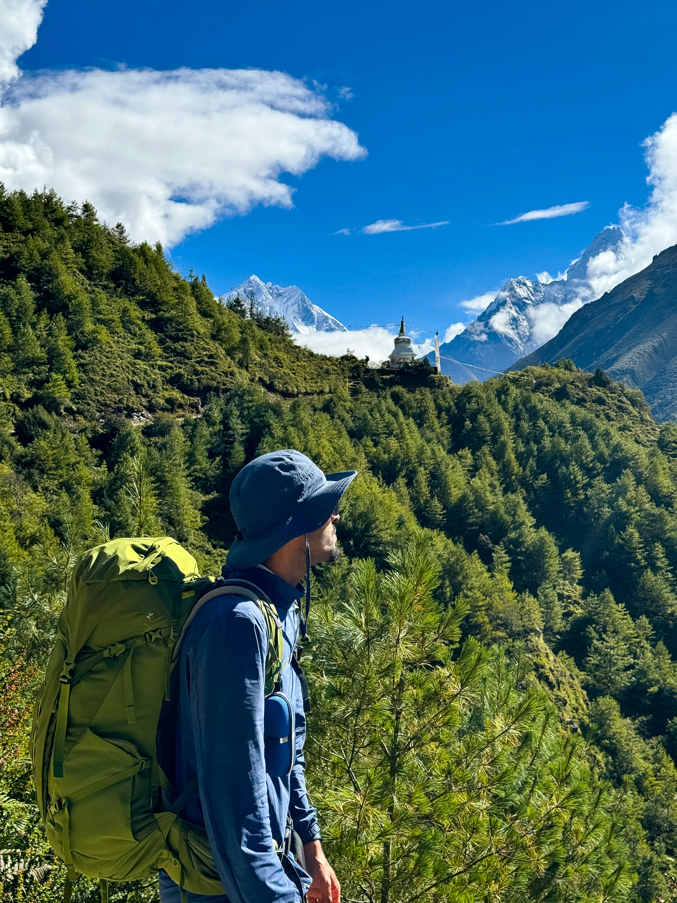
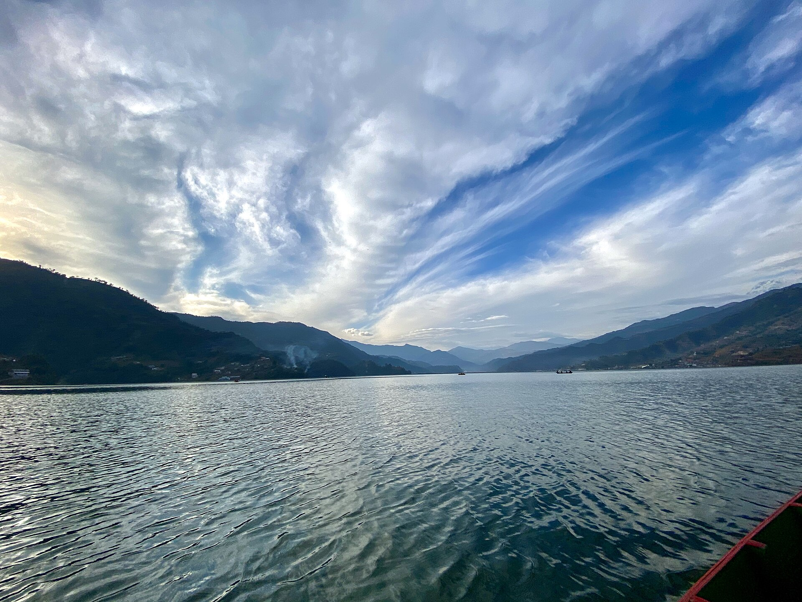
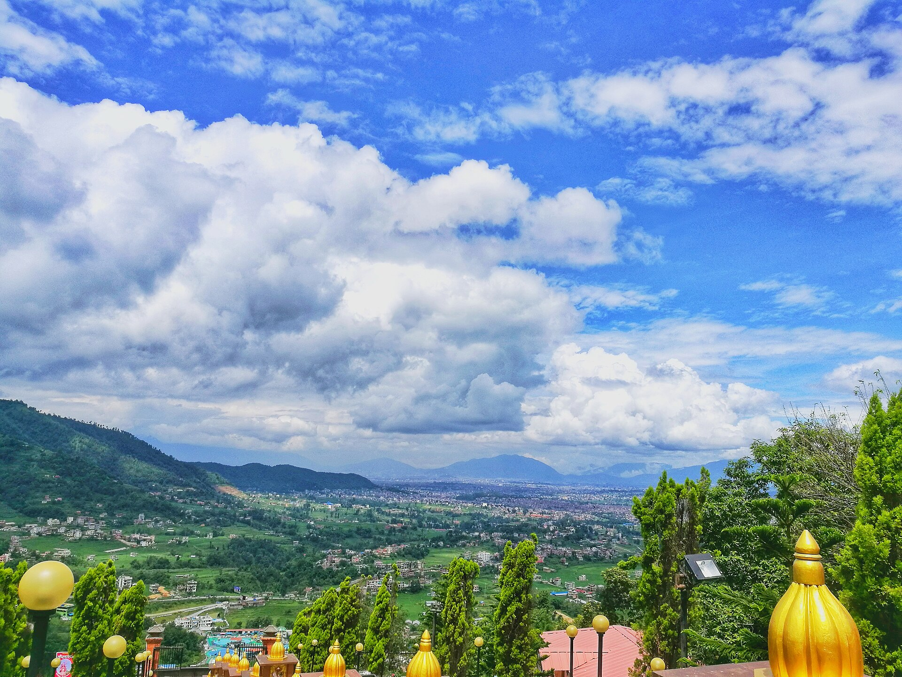
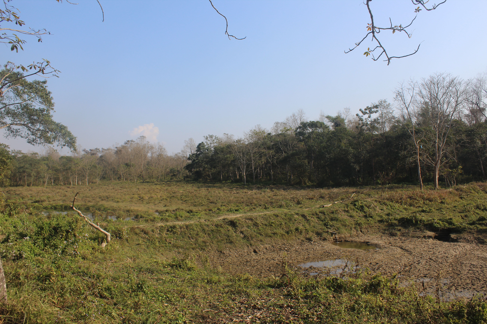
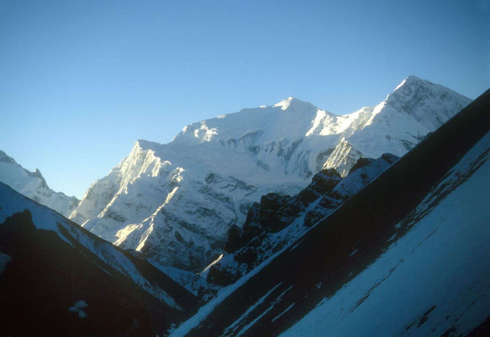

Everest Base Camp Trek
Explore the breathtaking journey to Everest Base Camp and discover the beauty of the Himalayan region.
Read MoreDiscover travel guides, destinations, experiences, and stories from across Nepal.

Explore the breathtaking journey to Everest Base Camp and discover the beauty of the Himalayan region.
Read More
Discover peaceful lakes, mountain views, adventure activities, and the unique atmosphere of Pokhara.
Read More
Explore the cultural heart of Nepal through historic temples, local streets, food, and city life.
Read More
Experience Nepal's wildlife, forests, rivers, and natural landscapes in the beautiful Chitwan region.
Read More
Discover mountain landscapes, traditional villages, and unforgettable views along the Annapurna Circuit.
Read More